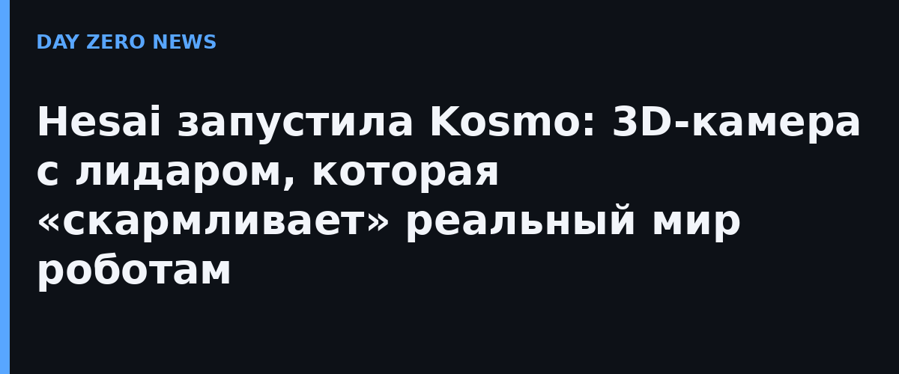

Hesai Group (Nasdaq: HSAI; HKEX: 2525), мировой лидер автомобильных лидаров, в среду представила Kosmo — трёхмерную пространственную камеру для сбора «физических» данных, необходимых для обучения ИИ. Устройство объединяет лидар, высокоточное фото и реконструкцию по методу 3D Gaussian Splatting: за один проход превращает кампус, завод или склад в высокодетализированную редактируемую 3D-модель.
Компания называет Kosmo первой в мире «ИИ-пространственной камерой»: анонс платформы состоялся в апреле 2026 года, а показ — в июле на конференции WAIC в Шанхае. Смысл в том, что качественных 3D-данных о реальном мире критически мало: дорогая классическая 3D-съёмка не масштабируется, а плоские фото и синтетические данные не передают сложность настоящих помещений. Космо обещает превратить дефицитную пространственную информацию в стандартизированный актив для обучения embodied-моделей и world-моделей — плюс для кино, игр и оцифровки культурного наследия.
Для Hesai это выход за пределы автомобильного рынка: камера — часть «трёхуровневой» инфраструктуры физического ИИ (восприятие — понимание — исполнение) вместе с мини-лидарами JT серии для роботов и 6D-лидаром ETX. Драйвер амбиций — прогнозы аналитиков: Hesai ссылается на Morgan Stanley, по оценке которых к 2050 году на роботов будет приходиться примерно в шесть раз больше лидаров, чем на автомобили.
Речь о запуске продукта, а не о готовом решении для дома: Kosmo адресована предприятиям и разработчикам роботов, а массовое ли она найдёт применение, зависит от цены и экосистемы данных. Но сама логика показательна — рынок дошёл до того, что «главный лидарщик планеты» начинает продавать не датчики, а сырьё для обучения роботов.